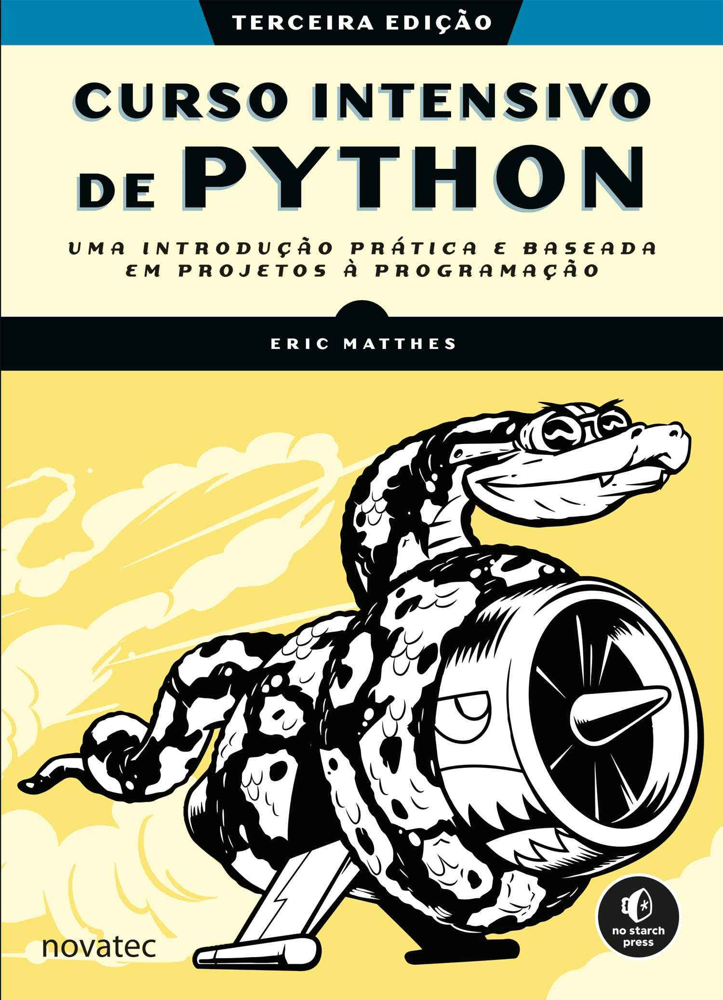

Desenvolvendo Jogos e POO
PASIA - Aula T.9
DAC - ICET - Universidade Federal de Lavras
04/10/2025
O conteúdo dessa aula é baseado nos capítulos 9, 12 e 13 do livro:

Nessa aula nós vamos desenvolver um jogo usando a biblioteca pygame.
- Para desenvolver o jogo usaremos conceitos de POO: Programação Orientada a Objetos.
Usaremos POO porque um jogo é um projeto bem mais complexo do que os exemplos que vimos na disciplina até agora.
- Em vez de apresentar como se implementa OO em Python e depois desenvolver o jogo,
- vamos aprender a usar OO à medida que o jogo é desenvolvido.
Ideias sobre o formato da aula
Ao preparar a aula, estudei os capítulos do livro.
- E também experimentei usar um Assistente de IA em modo interativo.
Testei primeiro com o Copilot e depois com o ChatGPT.
- Apresento a seguir um resumo dessas tentativas.
Experimentando com Copilot com GPT 4.1 no modo Ask
Prompt
Gostaria de iniciar uma sessão interativa para aprender a usar a biblioteca pygame para desenvolver um jogo 2D em Python. Nesta seção considere que conheço o básico de Python, mas nunca utilizei Orientação a Objetos nessa linguagem (eu aprendi usando Java). Gostaria que o jogo fosse construído um passo de cada vez, de forma bem didática. O jogo se chamará Invasão Alienígena. O jogador controlará uma nave que ficará na parte inferior da tela e poderá se movimentar da direita para a esquerda. A nave consegue atirar. Os inimigos são naves alienígenas que aparecem no topo da tela e se movimentam lateralmente, hora para esquerda, hora para a direita e também se movimentam verticalmente, descendo em direção à nave do jogador. Se as nave alienígenas atingirem a nave do jogador, o jogo termina. Se o tiro da nave do jogador atinge uma nave alienígena, ela é eliminada.
O copilot rodou com @workspace, gerando uma estrutura de projeto com o jogo já “pronto” e sem nenhuma interação.
- Mas o projeto tinha vários erros.
Cliquei em Rerun without
- Aí sim, o jogo começou a ser gerado em um processo interativo.
- E eu podia direcionar a sequência da conversa pedindo mais ou menos detalhes.
- Mas percebi que o resultado não era tão bom quanto os capítulos de livro
- Muita coisa era feita de forma direta, sem uma explicação clara.
Experimentando com ChatGPT
Experimentei o mesmo prompt no ChatGPT (veja aqui).
- O resultado foi mais interessante que usando o Copilot.
- As partes do código que eram criadas eram explicadas em mais detalhes.
- Apesar de ter alguns erros em exemplos (de Java) de vez em quando.
- Foram também legais as sugestões de onde conseguir imagens.
Mas, no geral, o material do livro era realmente bem mais didático.
- E usava construções / funcionalidades importantes do pygame.
- que eram ignoradas nas sessões com Assitentes de AI.
Decidi então basear a aula nos capítulos do livro.
- E, na Aula Prática, a ideia é que vocês incrementem o jogo com ajuda do Copilot.
Invasão Alienígena
Planejando seu projeto
Importância de definir bem o que se quer desenvolver antes de sair fazendo.
Instalando PyGame
Pygame não é um módulo built-in, portanto, precisa ser instalado.
Iniciando o Projeto do Jogo
invasao_alien.py
import sys
import pygame
class InvasaoAlien:
"""Classe geral para gerenciar ativos e comportamento do jogo."""
def __init__(self):
"""Inicializa o jogo e cria os recursos do jogo."""
1 pygame.init()
2 self.tela = pygame.display.set_mode((1200, 800))
pygame.display.set_caption("Invasão Alienígena")
def executar_jogo(self):
"""Inicia o loop principal do jogo."""
3 while True:
# Observa eventos de teclado e mouse.
4 for evento in pygame.event.get():
5 if evento.type == pygame.QUIT:
sys.exit()
6 pygame.display.flip()
if __name__ == '__main__':
ai = InvasaoAlien()
ai.executar_jogo() - 1
- Inicializa as configurações de background.
- 2
- Cria uma janela para exibição (Surface).
- 3
- Loop de jogo.
- 4
- Loop dos eventos detectados desde a última iteração.
- 5
- Evento gerado quando o jogador clica no botão de fechar a janela.
- 6
- Atualiza o desenho na tela (double buffer). :::
Classes em Python
Controlando o frame rate
invasao_alien.py
def __init__(self):
"""Inicializa o jogo e cria os recursos do jogo."""
pygame.init()
self.clock = pygame.time.Clock()
# -- trecho de código omitido --
def executar_jogo(self):
"""Inicia o loop principal do jogo."""
while True:
# -- trecho de código omitido --
pygame.display.flip()
self.clock.tick(60) # Limita a 60 quadros por segundo Definindo a cor de fundo
invasao_alien.py
def __init__(self):
# -- trecho de código omitido --
pygame.display.set_caption("Invasão Alienígena")
# Define a cor de fundo
self.cor_fundo = (230, 230, 230)
def executar_jogo(self):
"""Inicia o loop principal do jogo."""
while True:
# Observa eventos de teclado e mouse.
for evento in pygame.event.get():
if evento.type == pygame.QUIT:
sys.exit()
# Redesenha a tela a cada passagem pelo loop.
self.tela.fill(self.cor_fundo)
pygame.display.flip()
self.clock.tick(60) # Limita a 60 quadros por segundoCriando uma classe Settings
config.py
invasao_alien.py
import sys
import pygame
from config import Config
class InvasaoAlien:
"""Classe geral para gerenciar ativos e comportamento do jogo."""
def __init__(self):
"""Inicializa o jogo e cria os recursos do jogo."""
pygame.init()
self.clock = pygame.time.Clock()
self.config = Config()
self.tela = pygame.display.set_mode(
(self.config.largura_tela, self.config.altura_tela))
pygame.display.set_caption("Invasão Alienígena")
def executar_jogo(self):
# -- trecho de código omitido --
# Redesenha a tela a cada passagem pelo loop.
self.tela.fill(self.config.cor_fundo)
pygame.display.flip()
self.clock.tick(60) # Limita a 60 quadros por segundoCriando uma nave
üåê Sites de Sprites Gratuitos
ChatGPT
- OpenGameArt.org üîó https://opengameart.org
- Gigante repositório de sprites gratuitos.
- Muitos já vêm em pixel art ou estilo retrô arcade.
- Itch.io ‚Äì Asset Packs gratuitos üîó https://itch.io/game-assets/free
- Packs de sprites feitos por artistas independentes.
- Muitos permitem uso em jogos comerciais.
- Kenney.nl üîó https://kenney.nl/assets
- Sprites profissionais e organizados.
- Tudo em CC0 (sem restrição de uso).
ChatGPT
- CraftPix.net (Freebies) üîó https://craftpix.net/freebies/
- Arte mais elaborada.
- Tem alguns pacotes gratuitos, mas muitos são pagos.
- Google + Filtros de Licen√ßa üîó Vá em Google Images
- Em Ferramentas > Direitos de uso, filtre por Creative Commons.
- Assim evita problemas de copyright.
Criando a classe Nave
nave.py
import pygame
class Nave:
""" Classe para cuidar da nave do jogador """
def __init__(self, jogo):
""" Inicializa a nave e define sua posição inicial. """
self.tela = jogo.tela
self.ret_tela = jogo.tela.get_rect()
# Sobe a imagem da nave e obtém seu retângulo.
# Método convert é importante para melhorar desempenho!
self.imagem = pygame.image.load('imagens/nave.png').convert()
self.ret = self.imagem.get_rect()
# Começa cada nave nova no centro inferior da tela.
self.ret.midbottom = self.ret_tela.midbottom
def desenhar(self):
""" Desenha a nave em sua posição atual. """
self.tela.blit(self.imagem, self.ret)Desenhando a nave na tela
invasao_alien.py
from config import Config
from nave import Nave
class InvasaoAlien:
"""Classe geral para gerenciar ativos e comportamento do jogo."""
def __init__(self):
# -- trecho de código omitido --
pygame.display.set_caption("Invasão Alienígena")
self.nave = Nave(self)
def executar_jogo(self):
# -- trecho de código omitido --
# Redesenha a tela a cada passagem pelo loop.
self.tela.fill(self.config.cor_fundo)
self.nave.desenhar()Refatoração: método _verificar_eventos() e _atualizar_tela()
invasao_alien.py
def executar_jogo(self):
"""Inicia o loop principal do jogo."""
while True:
self._verificar_eventos()
self._atualizar_tela()
self.clock.tick(60)
def _verificar_eventos(self):
"""Responde a eventos de teclado e mouse."""
for evento in pygame.event.get():
if evento.type == pygame.QUIT:
sys.exit()
def _atualizar_tela(self):
"""Desenha a nova imagem da tela do jogo e a utiliza na tela."""
self.tela.fill(self.config.cor_fundo)
self.nave.desenhar()
pygame.display.flip()Pilotando a nave
Movimento contínuo
nave.py
def __init__(self, jogo):
# -- trecho de código omitido --
# Começa cada nave nova no centro inferior da tela.
self.ret.midbottom = self.ret_tela.midbottom
# Flag de movimento; começa com uma nave que não está se movendo.
self.movendo_direita = False
def atualizar(self):
""" Atualiza a posição da nave com base na flag de movimento. """
if self.movendo_direita:
self.ret.x += 1invasao_alien.py
def executar_jogo(self):
"""Inicia o loop principal do jogo."""
while True:
self._verificar_eventos()
self.nave.atualizar()
self._atualizar_tela()
self.clock.tick(60)
def _verificar_eventos(self):
"""Responde a eventos de teclado e mouse."""
for evento in pygame.event.get():
if evento.type == pygame.QUIT:
sys.exit()
elif evento.type == pygame.KEYDOWN:
if evento.key == pygame.K_RIGHT:
self.nave.movendo_direita = True
elif evento.type == pygame.KEYUP:
if evento.key == pygame.K_RIGHT:
self.nave.movendo_direita = FalseMovendo nas duas direções
nave.py
def __init__(self, jogo):
# -- trecho de código omitido --
# Flags de movimento; começa com uma nave que não está se movendo.
self.movendo_direita = False
self.movendo_esquerda = False
def atualizar(self):
""" Atualiza a posição da nave com base nas flags de movimento. """
if self.movendo_direita:
self.ret.x += 1
if self.movendo_esquerda:
self.ret.x -= 1Ajustando a velocidade da nave
config.py
Ajuste a velocidade testando o jogo.
nave.py
def __init__(self, jogo):
""" Inicializa a nave e define sua posição inicial. """
self.tela = jogo.tela
self.ret_tela = jogo.tela.get_rect()
self.config = jogo.config
# -- trecho de código omitido --
# Armazena um float para guardar a posição horizontal exata da nave
self.x = float(self.ret.x)
def atualizar(self):
""" Atualiza a posição da nave com base nas flags de movimento. """
if self.movendo_direita:
self.x += self.config.velocidade_nave
if self.movendo_esquerda:
self.x -= self.config.velocidade_nave
self.ret.x = int(self.x)Restringindo o alcance da Nave
nave.py
def atualizar(self):
""" Atualiza a posição da nave com base nas flags de movimento. """
if self.movendo_direita and self.ret.right < self.ret_tela.right:
self.x += self.config.velocidade_nave
if self.movendo_esquerda and self.ret.left > 0:
self.x -= self.config.velocidade_nave
self.ret.x = int(self.x)Refatorando o método _verificar_eventos()
invasao_alien.py
def _verificar_eventos(self):
"""Responde a eventos de teclado e mouse."""
for evento in pygame.event.get():
if evento.type == pygame.QUIT:
sys.exit()
elif evento.type == pygame.KEYDOWN:
self._verificar_eventos_tecla_pressionada(evento)
elif evento.type == pygame.KEYUP:
self._verificar_eventos_tecla_liberada(evento)
def _verificar_eventos_tecla_pressionada(self, evento):
""" Responde a teclas pressioandas"""
if evento.key == pygame.K_RIGHT:
self.nave.movendo_direita = True
elif evento.key == pygame.K_LEFT:
self.nave.movendo_esquerda = True
def _verificar_eventos_tecla_liberada(self, evento):
""" Responde a teclas liberadas"""
if evento.key == pygame.K_LEFT:
self.nave.movendo_esquerda = False
elif evento.key == pygame.K_RIGHT:
self.nave.movendo_direita = FalseModo Tela Cheia
Fechar o jogo com a tecla q
Executando o jogo em modo Tela Cheia
invasao_alien.py
def __init__(self):
"""Inicializa o jogo e cria os recursos do jogo."""
pygame.init()
self.clock = pygame.time.Clock()
self.config = Config()
self.tela = pygame.display.set_mode((0,0), pygame.FULLSCREEN)
self.config.largura_tela = self.tela.get_rect().width
self.config.altura_tela = self.tela.get_rect().height
pygame.display.set_caption("Invasão Alienígena")- Agora a largura e altura do jogo não é pré-definida.
- Provavelmente pode ser interessante mudar a velocidade da nave.
Aviso
Se não tivéssemos tratado a tecla q para sair do jogo, não teríamos uma forma de sair do jogo no modo tela cheia.
Nessa demonstração vamos ficar no modo janela mesmo.
- Devido ao tamanho das imagens e como foi planejada a inclusão de alienígenas.
Atirando
Configuração dos projéteis
Classe Projetil
projetil.py
import pygame
from pygame.sprite import Sprite
class Projetil(Sprite):
""" Classe para gerenciar projéteis disparados pela nave. """
def __init__(self, ai_game):
""" Cria um objeto de projétil na posição atual da nave. """
super().__init__()
self.tela = ai_game.tela
self.config = ai_game.config
self.cor = self.config.cor_projetil
# Cria um projétil na posição (0,0) e depois define a posição correta.
self.ret = pygame.Rect(0, 0, self.config.largura_projetil,
self.config.altura_projetil)
self.ret.midtop = ai_game.nave.ret.midtop
# Guarda a posição do projétil como um float.
self.y = float(self.ret.y)
def update(self):
""" Move o projétil para cima na tela.
Exemplo de sobrescrita de método.
Útil para usarmos em um grupo de sprites.
"""
# Atualiza a posição exata do projétil.
self.y -= self.config.velocidade_projetil
# Atualiza a posição do retângulo.
self.ret.y = self.y
def desenhar(self):
""" Desenha o projétil na tela. """
pygame.draw.rect(self.tela, self.cor, self.ret)Herança em Python
Grupos de projéteis
invasao_alien.py
from nave import Nave
from projetil import Projetil
class InvasaoAlien:
def __init__(self):
# -- trecho de código omitido --
self.nave = Nave(self)
self.projeteis = pygame.sprite.Group()
def executar_jogo(self):
"""Inicia o loop principal do jogo."""
while True:
self._verificar_eventos()
self.nave.atualizar()
self.projeteis.update()
self._atualizar_tela()
self.clock.tick(60)Disparando projéteis
invasao_alien.py
def _verificar_eventos_tecla_pressionada(self, evento):
# -- trecho de código omitido --
elif evento.key == pygame.K_q:
sys.exit()
elif evento.key == pygame.K_SPACE:
self._disparar_projetil()
def _verificar_eventos_tecla_liberada(self, evento):
# -- trecho de código omitido --
def _disparar_projetil(self):
""" Cria um novo projétil e o adiciona ao grupo de projéteis. """
novo_projetil = Projetil(self)
self.projeteis.add(novo_projetil)
def _atualizar_tela(self):
"""Desenha a nova imagem da tela do jogo e a utiliza na tela."""
self.tela.fill(self.config.cor_fundo)
for projetil in self.projeteis.sprites():
projetil.desenhar()
self.nave.desenhar()
pygame.display.flip()Apagando projéteis fora da tela
invasao_alien.py
def executar_jogo(self):
"""Inicia o loop principal do jogo."""
while True:
self._verificar_eventos()
self.nave.atualizar()
self.projeteis.update()
# Descarta os projéteis que desapareceram
for projetil in self.projeteis.copy():
if projetil.ret.bottom <= 0:
self.projeteis.remove(projetil)
print(len(self.projeteis)) # REMOVER DEPOIS DE TESTAR!
self._atualizar_tela()
self.clock.tick(60)Limitando o número de projéteis
config.py
Criando o método atualizar projéteis
invasao_alien.py
def executar_jogo(self):
"""Inicia o loop principal do jogo."""
while True:
self._verificar_eventos()
self.nave.atualizar()
self._atualizar_projeteis()
self._atualizar_tela()
self.clock.tick(60)
# -- trecho de código omitido --
def _atualizar_projeteis(self):
""" Atualiza a posição dos projéteis e descarta os projéteis antigos. """
self.projeteis.update()
# Livra-se dos projéteis que desapareceram.
for projetil in self.projeteis.copy():
if projetil.ret.bottom <= 0:
self.projeteis.remove(projetil)Alienígenas
Criando a classe Alien
alien.py
import pygame
from pygame.sprite import Sprite
class Alien(Sprite):
""" Classe para representar um único alien de um esquadrão. """
def __init__(self, ai_game):
""" Inicializa o alien e define sua posição inicial. """
super().__init__()
self.tela = ai_game.tela
# Carrega a imagem do alien e define seu atributo retangulo.
# ATENÇÃO: aqui precisamos usar os nomes image e rect, pois
# são esses nomes que o Pygame espera e usa internamente.
self.image = pygame.image.load('imagens/alien.png')
self.rect = self.image.get_rect()
# Começa cada novo alien próximo ao canto superior esquerdo da tela.
# Considera um espaço a partir da borda, do tamanho do retângulo.
self.rect.x = self.rect.width
self.rect.y = self.rect.height
# Armazena a posição horizontal exata do alien.
self.x = float(self.rect.x)Criando uma instância do alienígena
invasao_alien.py
from projetil import Projetil
from alien import Alien
class InvasaoAlien:
"""Classe geral para gerenciar ativos e comportamento do jogo."""
def __init__(self):
# -- trecho de código omitido --
self.nave = Nave(self)
self.projeteis = pygame.sprite.Group()
self.aliens = pygame.sprite.Group()
self._criar_esquadrão()
def _criar_esquadrão(self):
"""Cria um esquadrão completo de aliens."""
# por enquanto vamos criar apenas um alien
alien = Alien(self)
self.aliens.add(alien)
def _atualizar_tela(self):
# -- trecho de código omitido --
self.nave.desenhar()
# ATENÇÃO: para que todos os aliens sejam desenhados automaticamente
# ele deve ter atributos chamados image e rect
self.aliens.draw(self.tela)
pygame.display.flip()Criando uma fileira de alienígenas
invasao_alien.py
def _criar_esquadrão(self):
"""Cria um esquadrão completo de aliens."""
# Cria um alienígena e continua criando aliens até que não haja mais espaço.
# O distanciamento entre os aliens é a largura de um alien.
alien = Alien(self)
largura_alien = alien.rect.width
x_atual = largura_alien
while x_atual < (self.config.largura_tela - 2 * largura_alien):
self._criar_alien(x_atual)
x_atual += 2 * largura_alien
def _criar_alien(self, posicao_x):
""" Cria um alien e coloca-o no esquadrão. """
novo_alien = Alien(self)
novo_alien.x = posicao_x
novo_alien.rect.x = posicao_x
self.aliens.add(novo_alien)Adicionando fileiras
invasao_alien.py
def _criar_esquadrão(self):
"""Cria um esquadrão completo de aliens."""
# Cria um alienígena e continua criando aliens até que não haja mais espaço.
# O distanciamento entre os aliens é a largura de um alien.
alien = Alien(self)
largura_alien, altura_alien = alien.rect.size
x_atual, y_atual = largura_alien, altura_alien
while y_atual < (self.config.altura_tela - 5 * altura_alien):
while x_atual < (self.config.largura_tela - 2 * largura_alien):
self._criar_alien(x_atual, y_atual)
x_atual += 2 * largura_alien
x_atual = largura_alien
y_atual += 2 * altura_alienMovendo o esquadrão
Movendo os alienígenas para a direita
config.py
alien.py
def __init__(self, ai_game):
""" Inicializa o alien e define sua posição inicial. """
super().__init__()
self.tela = ai_game.tela
self.config = ai_game.config
# -- trecho de código omitido --
def update(self):
""" Move o alien para a direita. """
self.x += self.config.velocidade_alien
self.rect.x = self.xinvasao_alien.py
def executar_jogo(self):
"""Inicia o loop principal do jogo."""
while True:
self._verificar_eventos()
self.nave.atualizar()
self._atualizar_projeteis()
self._atualizar_aliens()
self._atualizar_tela()
self.clock.tick(60)
def _atualizar_aliens(self):
"""Atualiza as posições de todos os aliens do esquadrão."""
self.aliens.update()Configurando descida e mudança de direção
Tratando direção e criando método para verificar borda
alien.py
def update(self):
""" Move o alien para a direita ou para a esquerda. """
self.x += self.config.velocidade_alien * self.config.direcao_esquadrao
self.rect.x = self.x
def verificar_borda(self):
""" Retorna True se o alien estiver na borda da tela. """
ret_tela = self.tela.get_rect()
return self.rect.right >= ret_tela.right or self.rect.left <= 0Fazendo a frota descer e mudar de direção
invasao_alien.py
def _atualizar_aliens(self):
""" Verifica se o esquadrão está na borda e atualiza as posições dos aliens. """
self._verificar_bordas_esquadrao()
self.aliens.update()
def _verificar_bordas_esquadrao(self):
""" Faz o esquadrão descer se um dos aliens atingiu uma borda. """
for alien in self.aliens.sprites():
if alien.verificar_borda():
self._descer_esquadrao()
break
def _descer_esquadrao(self):
""" Desce o esquadrão e muda sua direção. """
for alien in self.aliens.sprites():
alien.rect.y += self.config.velocidade_descida_esquadrao
self.config.direcao_esquadrao *= -1Eliminando aliens
Detectando colisões de projéteis
Traceback (most recent call last):
File "/home/julio/Downloads/invasao-alienigena/invasao_alien.py", line 141, in <module>
ai.executar_jogo()
File "/home/julio/Downloads/invasao-alienigena/invasao_alien.py", line 33, in executar_jogo
self._atualizar_projeteis()
File "/home/julio/Downloads/invasao-alienigena/invasao_alien.py", line 72, in _atualizar_projeteis
if projetil.ret.bottom <= 0:
^^^^^^^^^^^^
AttributeError: 'Projetil' object has no attribute 'ret'. Did you mean: 'rect'?- Precisamos mudar o nome do atributo
retda classeProjetilpararect.
Criando projéteis maiores para testes
Para facilitar os testes.
- Vamos experimentar 400.
Recriando o esquadrão
Refatorando _atualizar_projeteis()
invasao_alien.py
def _atualizar_projeteis(self):
""" Atualiza a posição dos projéteis e descarta os projéteis antigos. """
self.projeteis.update()
# Livra-se dos projéteis que desapareceram.
for projetil in self.projeteis.copy():
if projetil.rect.bottom <= 0:
self.projeteis.remove(projetil)
self._verificar_colisoes_projeteis_aliens()
def _verificar_colisoes_projeteis_aliens(self):
""" Responde a colisões entre projéteis e aliens. """
# Verifica se algum projétil atingiu um alien.
# Se sim, descarta tanto o projétil quanto o alien.
colisoes = pygame.sprite.groupcollide(
self.projeteis, self.aliens, True, True)
if not self.aliens:
# Destrói os projéteis existentes e cria um novo esquadrão.
self.projeteis.empty()
self._criar_esquadrão()Dando um fim ao jogo
Detectando colisões entre naves e aliens
invasao_alien.py
# -- trecho de código omitido --
def _atualizar_aliens(self):
""" Verifica se o esquadrão está na borda e atualiza as posições dos aliens. """
self._verificar_bordas_esquadrao()
self.aliens.update()
# Detecta colisões entre a nave e os aliens.
if pygame.sprite.spritecollideany(self.nave, self.aliens):
print("A nave foi atingida!")Talvez seja interessante aumentar a velocidade (e de descida) dos aliens para testar.
Aqui, novamente, precisaremos usar atributo com nome rect em vez de ret.
Se estiver usando um linter como o pylance você verá um warning em self.nave.
- Isso porque o método
spritecollideanyespera umSprite, mas nossa classeNavenão herda dela. - Mesmo assim o código funciona, por que?
Duck Typing
Tratando as colisões entre a nave e aliens
config.py
estatisticas.py
class Estatisticas:
""" Rastreia as estatísticas do jogo. """
def __init__(self, jogo):
""" Inicializa as estatisticas """
self.config = jogo.config
self.reiniciar()
def reiniciar(self):
""" Inicializa as estatísticas que podem mudar ao longo do jogo. """
self.naves_restantes = self.config.max_navesinvasao_alien.py
import sys
from time import sleep
import pygame
from config import Config
from estatisticas import Estatisticas
# -- trecho de código omitido --
def __init__(self):
# -- trecho de código omitido --
pygame.display.set_caption("Invasão Alienígena")
# Cria uma instância para armazenar estatísticas do jogo.
self.estatisticas = Estatisticas(self)
# -- trecho de código omitido --
def _atualizar_aliens(self):
# -- trecho de código omitido --
# Detecta colisões entre a nave e os aliens.
if pygame.sprite.spritecollideany(self.nave, self.aliens):
self._acertar_nave()
def _acertar_nave(self):
""" Responde a uma colisão entre a nave e um alien. """
# Decrementa naves_restantes.
self.estatisticas.naves_restantes -= 1
# Esvazia a lista de aliens e projéteis.
self.aliens.empty()
self.projeteis.empty()
# Cria um novo esquadrão e centraliza a nave.
self._criar_esquadrão()
self.nave.centralizar()
# Faz uma pausa.
sleep(0.5)nave.py
Repare que sempre usamos a mesma instância da nave.
- Nós não criamos outro objeto quando a nave é atingida.
- Nós apenas a centralizamos.
- A classe de estatísticas cuida de lidar com quantas vidas existem.
Tratando alienígenas na borda inferior
invasao_alien.py
def _atualizar_aliens(self):
# -- trecho de código omitido --
# Detecta colisões entre a nave e os aliens.
if pygame.sprite.spritecollideany(self.nave, self.aliens):
self._acertar_nave()
# Verifica se algum alien atingiu a parte inferior da tela.
self._verificar_aliens_borda_inferior()
def _verificar_aliens_borda_inferior(self):
""" Verifica se algum alien atingiu a parte inferior da tela. """
for alien in self.aliens.sprites():
if alien.rect.bottom >= self.config.altura_tela:
# Trata esse caso do mesmo modo que se a nave tivesse sido atingida.
self._acertar_nave()
breakGame Over!
invasao_alien.py
def __init__(self):
# -- trecho de código omitido --
# Inicializa o jogo em um estado ativo
self.jogo_ativo = True
# -- trecho de código omitido --
def _acertar_nave(self):
""" Responde a uma colisão entre a nave e um alien. """
if self.estatisticas.naves_restantes <= 0:
self.jogo_ativo = False
return
# -- trecho de código omitido --Exemplos dentro do pygame
Tutoriais